Jeans dipinti a mano, uno alla volta.
Disegno a pennello e inchiostro direttamente sul denim: personaggi, koi, glifi, piccoli segni sulle tasche. Scegli un paio già finito o chiedine uno pensato per te.
Trascina per girarli
Lavori finiti
Ogni disegno nasce a mano, direttamente sul capo. Apri un capo per sfogliare tutte le sue foto.
Il paio intero
Tutti i disegni insieme, sul davanti.
Sukuna
Ritratto a linea sottile, con le mani giunte e i segni sul viso.
Koi sul fianco
Due carpe a pennello, una piena e una solo contorno.
Glifi
Una colonna di segni a pennello pieno che scende fino all'orlo.
Tasche
Un profilo a linea continua e un dado con gli occhi al posto dei punti.
Indossati
Il paio Jujutsu per strada: Sukuna sulla coscia, glifi lungo la gamba.
Indossati
Il paio nero addosso: totem e simboli lungo la gamba sinistra.
Braccio e volto
Da vicino, il braccio meccanico e il volto in cornice sulla gamba destra.
Mano in tasca
Gamba larga che cade dritta fino alle scarpe.
In movimento
Il denim si piega, i segni bianchi restano netti.
Il retro
Lame incrociate e un segno geometrico sulle tasche.
Contro il muro
Il paio completo, dalla vita all'orlo.
Braccio
Il braccio scheletrico e meccanico, tratto per tratto.
1 di 6
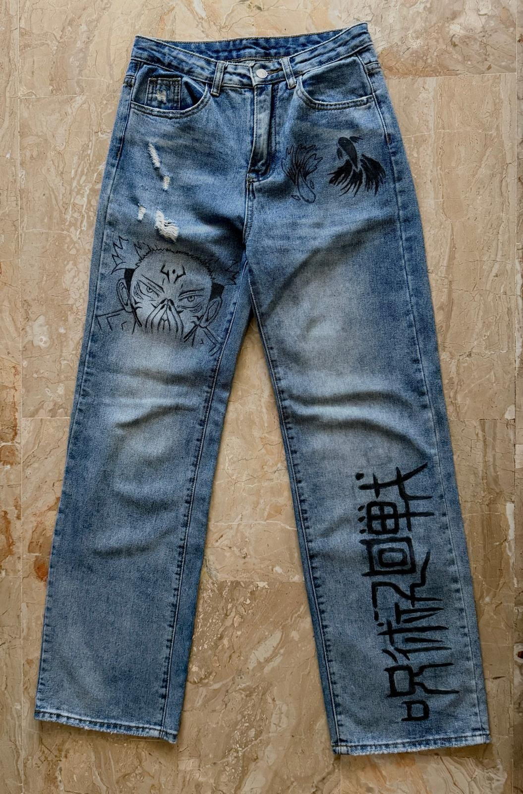
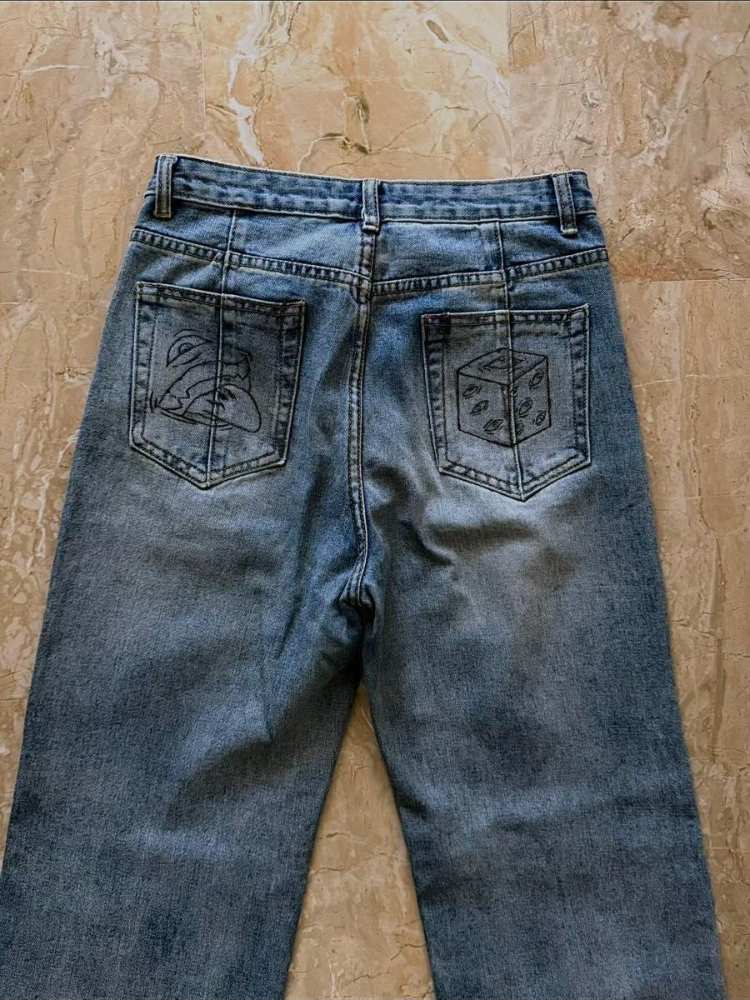
Il paio Jujutsu
Pezzo unico, già finito e pronto da indossare. Taglio dritto, lavaggio chiaro, strappi sulla coscia sinistra.
- Davanti
- Sukuna, koi, colonna di glifi
- Retro
- Profilo e dado sulle tasche
- Taglia e prezzo
- Su richiesta, rispondo entro pochi giorni
Linea bianca
su nero
Jeans neri a gamba larga, dipinti a pennello sottile. Un braccio meccanico, un volto classico, simboli e un totem che corre lungo la gamba: ogni segno è tracciato a mano, uno dopo l'altro.
È un pezzo unico e non è in vendita, ma puoi chiederne una versione tua, con le modifiche che vuoi.
Chiedi la tua versione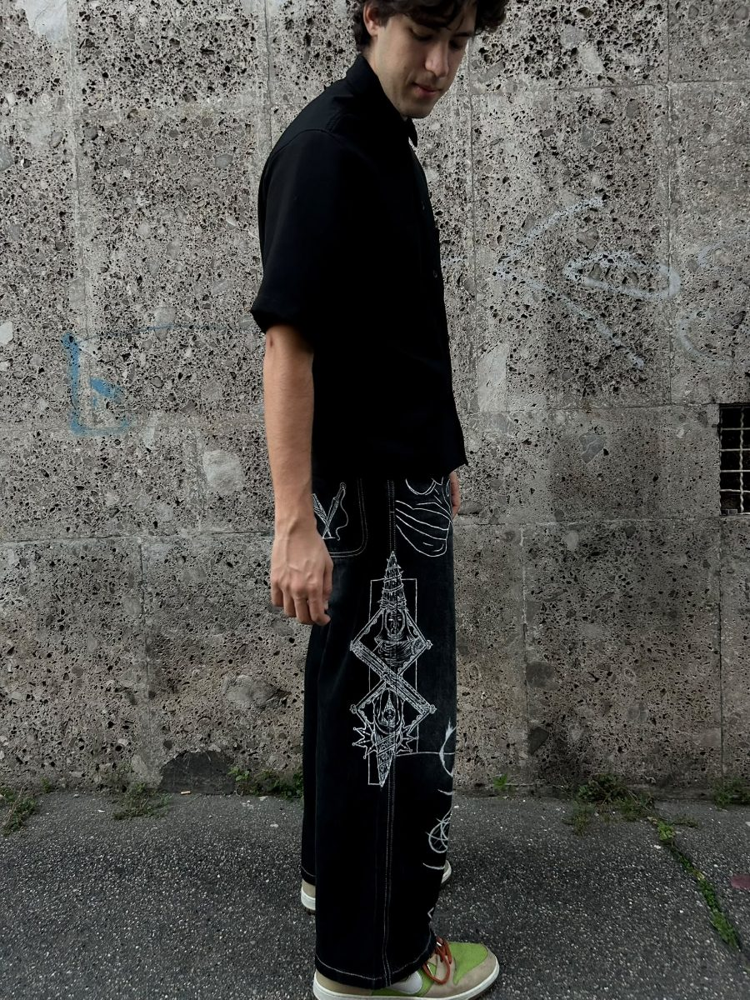
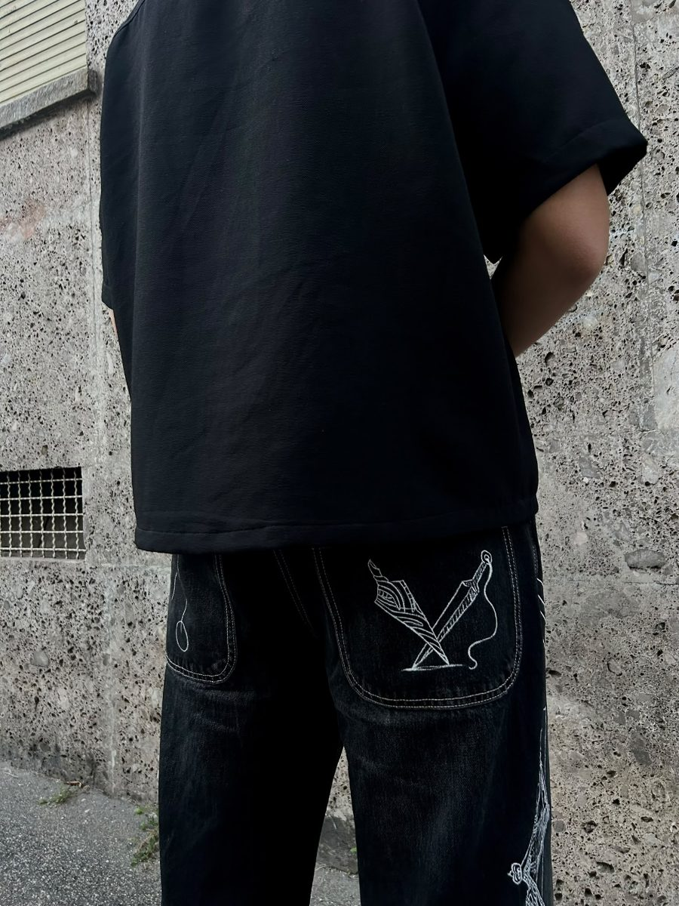
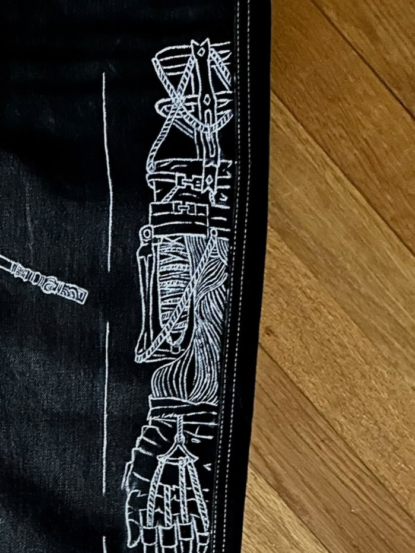
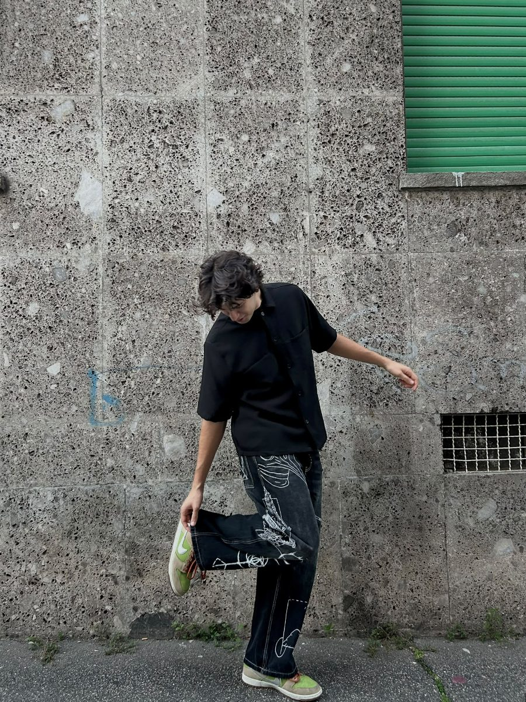
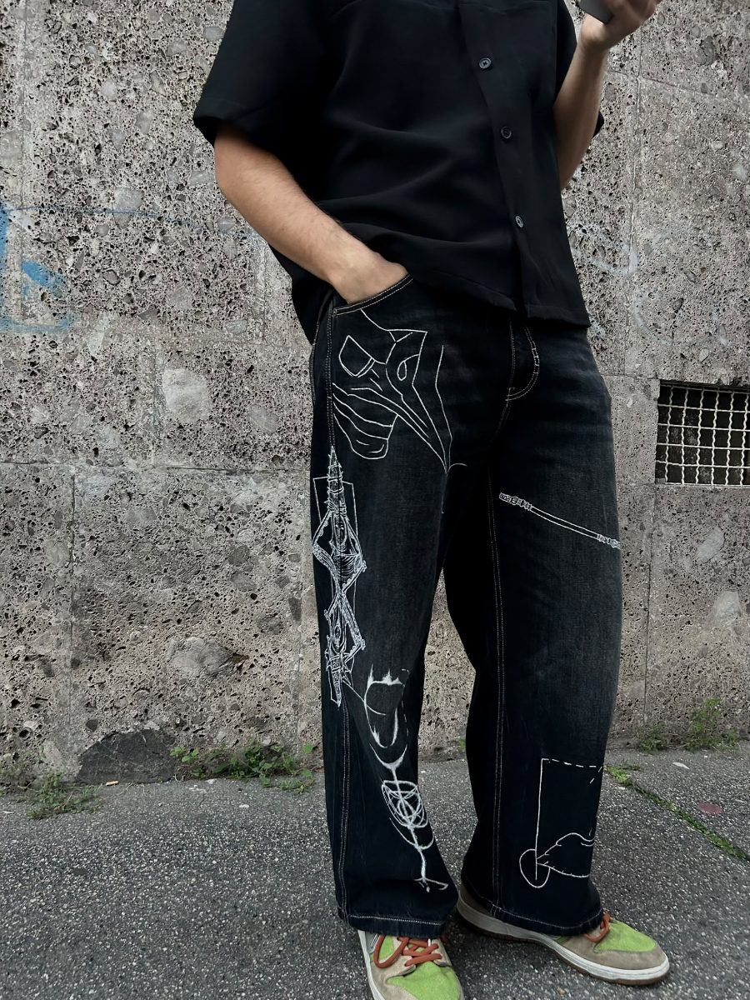
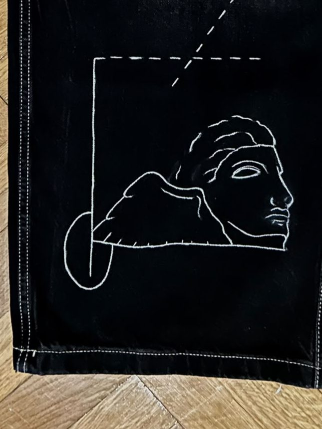
Da vicino
Tutto a mano, senza stampe né trasferibili: si vede la trama del denim sotto l'inchiostro. Passa sopra un dettaglio per vederlo a colori.
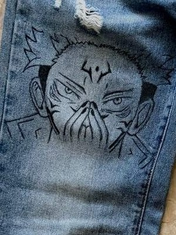
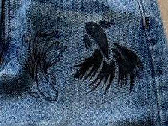
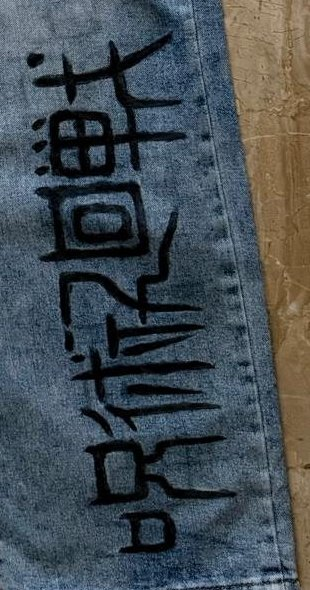
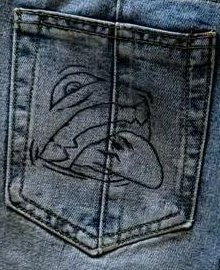
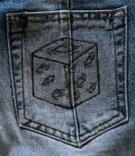
Un design solo tuo
Porti un'idea, anche solo abbozzata. La trasformo in un disegno pensato per il tuo capo: jeans, giacca, borsa o quello che vuoi dipingere.
- 1
Mi racconti l'idea
Soggetto, riferimenti, dove vuoi il disegno e quanto grande.
- 2
Ricevi la bozza
La sistemiamo insieme finché non ti convince. Solo allora inizio.
- 3
Dipingo il capo
Su un capo che mi mandi tu o su uno che scegliamo insieme.
- 4
Lo ricevi
Spedizione o consegna a mano, con le indicazioni per lavarlo.
Prenota
Compila il modulo e premi invia: la richiesta mi arriva subito. Ti rispondo per confermare disponibilità, tempi e prezzo.